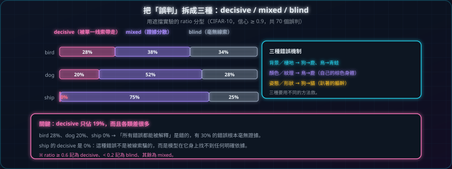

把「誤判」拆成三種
一句話：錯誤不是只有「錯」一種——有的是「被某個線索騙了」，有的是「根本沒想法」。

這個實驗在做什麼
對三個類別各抽 40 張「猜對」與盡量多的「猜錯」，全部跑一次遮擋，再用 ratio 把誤判分成 decisive / mixed / blind 三型。
- 輸入CIFAR-10 測試集，bird / dog / ship 三類，信心 ≥ 0.9 的樣本
- 操作每個樣本跑 49 次遮擋算 ratio；ratio ≥0.6 記為 decisive、<0.2 記為 blind、其餘 mixed
- 輸出每類的比例堆疊圖、decisive 樣本（ratio 最高 6 張）的 Grad-CAM、逐樣本明細
- 判讀decisive 佔比 = 「被某個線索帶走」的比例；若各類差距大，代表錯誤性質不同
數字（CIFAR-10，信心 ≥ 0.9，共 70 個誤判）
| 類別 | decisive | mixed | blind |
|---|---|---|---|
| bird | 28% | 38% | 34% |
| dog | 20% | 52% | 28% |
| ship | 0% | 75% | 25% |
| 合計 | 19% | 51% | 30% |
再看 decisive 誤判（ratio 最高的 6 張）的 Grad-CAM，可以歸納成三種機制：
| 機制 | 例子 | 熱點在哪 |
|---|---|---|
| 🏞 背景／棲地 | 狗 → 鹿、鳥 → 青蛙、鳥 → 飛機 | 圍欄、綠色植被、天空 |
| 🎨 顏色／紋理 | 鳥 → 鹿 | 鳥自己的棕色身體 |
| 🐾 姿態／形狀 | 狗 → 貓 | 趴著的軀幹輪廓 |
解説
想像你矇著眼摸東西猜是什麼：
- 摸到毛茸茸又暖暖的 → 你說「貓」（被質感騙了）
- 摸到硬的、有稜角 → 你說「箱子」（被形狀騙了）
- 什麼都摸不出來 → 你亂猜（沒有線索）
三種錯誤要用不同方法救：背景型可以改背景（第 10 章）、顏色型可以加灰階訓練、姿態型只能加更多資料。
學到什麼
先分型，再對症下藥。而且 decisive 誤判只佔 19%，比例還依類別差很多（bird 28%、ship 0%）——所以「所有錯誤都能被解釋」是錯的，有 30% 的錯誤根本毫無線索。
STEP 05程式碼
error_taxonomy.py · 三行分型
分型規則本身簡單到可以背下來：ratio ≥ 0.60 算 decisive、< 0.20 算 blind、中間是 mixed（兩個門檻都能用 CLI 改）。
def classify(ratio, decisive, blind):
if ratio >= decisive: # 預設 0.60：某個局部線索就把答案帶走
return "decisive"
if ratio < blind: # 預設 0.20：遮哪裡都沒差
return "blind"
return "mixed"統計時對每個誤判跑一次遮擋、算 ratio，再丟進 classify() 累加：
drop, base_prob, oc_pred, margin = occlusion_sensitivity(model, imgs[sel].to(device), 8, 4)
ratio = (drop.amax(dim=(1, 2)) / margin.clamp(min=1e-6)).cpu()
kinds = {}
for i in idx_w: # idx_w = 這個類別的誤判 index
kind = classify(float(ratio[i]), args.decisive, args.blind)
kinds[kind] = kinds.get(kind, 0) + 1
share = {k: v / len(idx_w) for k, v in kinds.items()} # bird: decisive 28% / mixed 38% / blind 34%執行方式：
python error_taxonomy.py --classes bird,dog,ship --k 40 --ckpt run_wide\cifar10\best.pt